Установка WDC.Платформы
WDC.Платформа предоставляется в виде образа жесткого диска, готового для работы. Для запуска используется программное обеспечение для виртуализации с открытым исходным кодом – Oracle VirtualBox.
Если данное ПО отсутствует на Вашем компьютере, то скачать файл установки последней актуальной версии Oracle VirtualBox можно на официальном сайте в разделе "Downloads": https://www.virtualbox.org/wiki/Downloads.
После чего следует установить дистрибутивные файлы виртуальной машины.
Установка ПО для виртуализации
После завершения скачивания необходимо запустить файл и установить ПО.
Процедура установки является типовой – во всех диалоговых окнах достаточно нажать кнопку "Next":
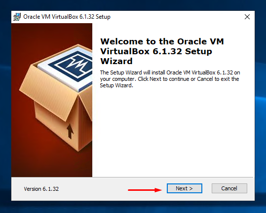
В следующем окне можно указать путь расположения установки программы. Изменять его не имеет особого смысла, так как в дальнейшем все подключаемые и создаваемые образы могут находиться в любом месте по Вашему усмотрению.
По умолчанию установка производится в папку Program files\Oracle\VirtualBox:
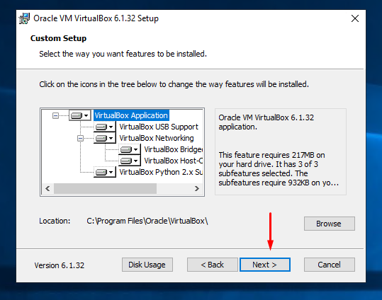
В следующем окне отметки, управляющие созданием ярлыков по завершению установки, рекомендуется оставить без изменений:
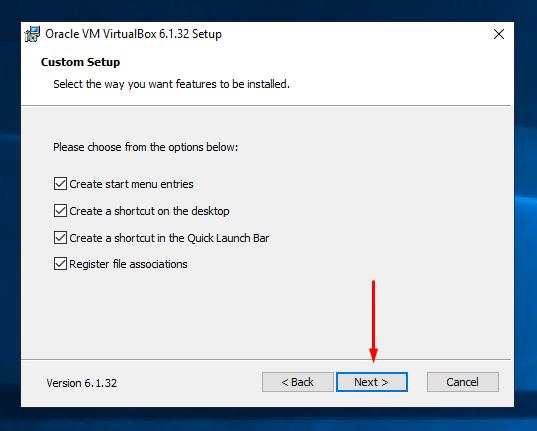
И по нажатию кнопки "Next" откроется очередное окно с предупреждением о недоступности на короткое время сетевого подключения во время установки продукта и смело нажимаем кнопку "Yes":
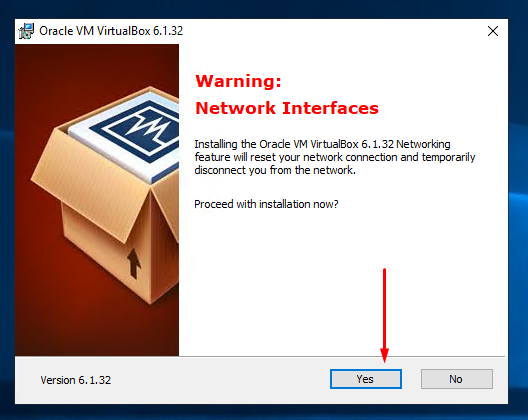
Перемещаемся в следующее диалоговое окно и нажимаем "Install":
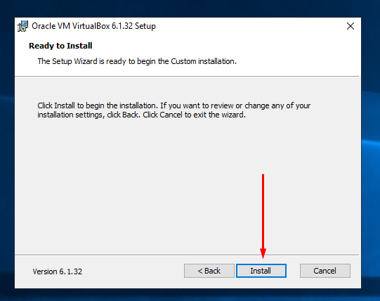
Важно!
При появлении диалогового окна, представленного на рисунке ниже, необходимо установить отметку в поле "Always trust software “Oracle Corporation”" и нажать кнопку "Install". В противном случае работа с сетью в VirtualBox будет невозможна.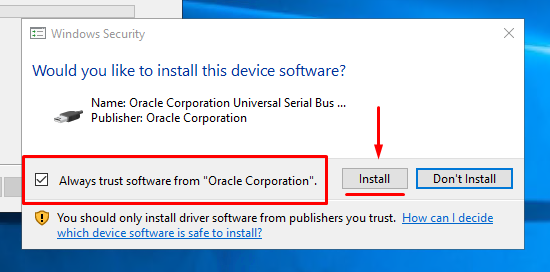
По окончанию установки нажмите кнопку "Finish":
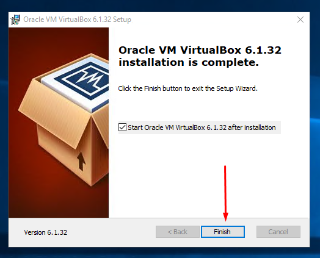
Подключение образа
На этом этапе работы требуется импортировать загруженные файлы виртуальной машины:
-
ot_platform-\<номер версии>.ovf
-
ot_platform-\<номер версии>.ova
Запустите главное окно программы VirtualBox, в меню "Файл" выберите команду "Импорт конфигураций":
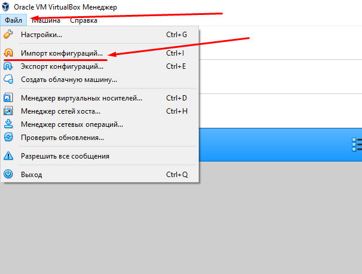
Выполните импорт образа согласно приведённой ниже инструкции.
В поле "Источник" оставьте без изменений (там должно быть – "Локальная файловая система"):
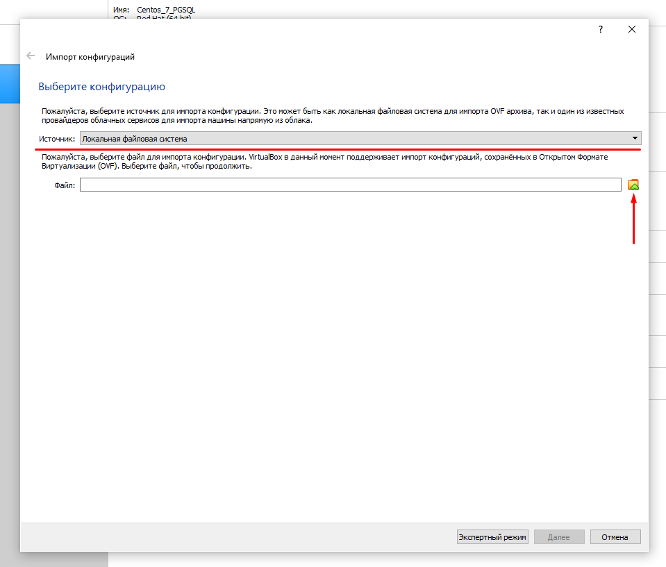
Заполните поле "Файл", нажав на иконку выбора папки, для этого в появившемся окне выберите дистрибутивный файл импортируемой конфигурации с расширением ".OVF":
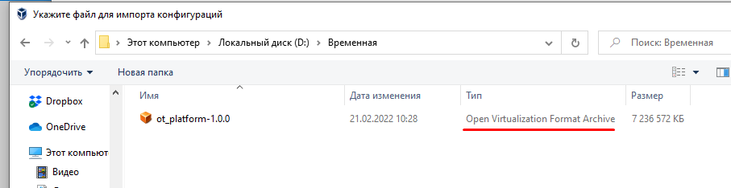
И после возврата в окно "Выберите конфигурацию" нажмите там кнопку "Далее":
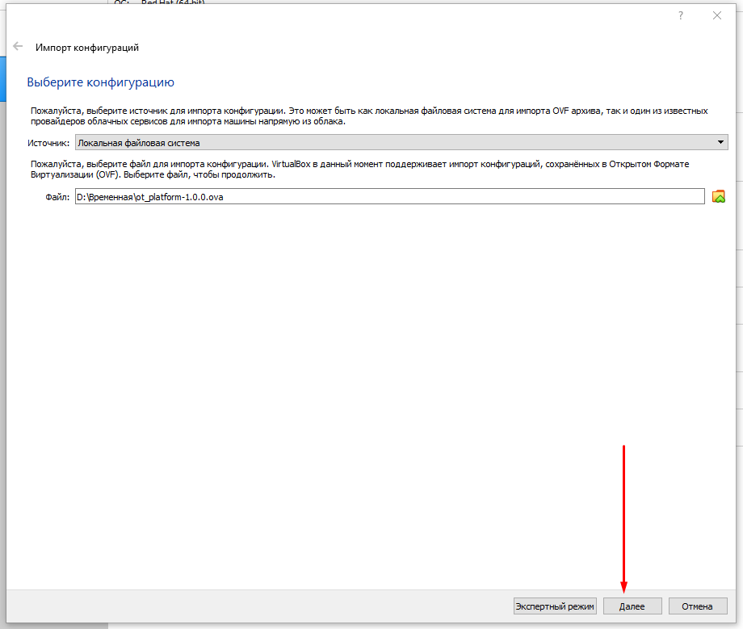
Далее, в окне "Укажите параметры импорта" будет представлен обзор импортируемой конфигурации. Здесь оставляем всё без изменений.
При желании можно изменить папку расположения файлов виртуальной машины в поле "Папка машины":
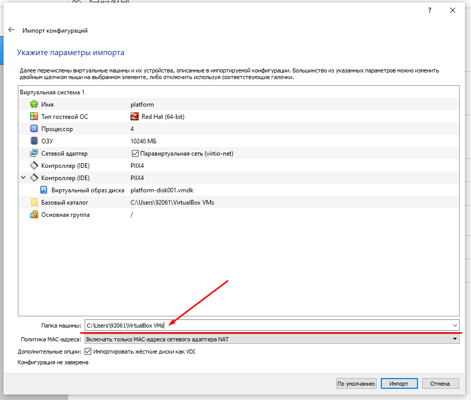
После чего нажмите кнопку "Импорт".
Первичный запуск виртуальной машины
После успешного импорта образа появится новая строка виртуальной машины в списке доступных.
Важно!
Перед первым запуском необходимо сменить тип сетевого подключения виртуальной машины, в противном случае работа с ней из сети будет невозможна.
Для изменения типа сетевого подключения выберите виртуальную машину и нажмите кнопку "Настроить":
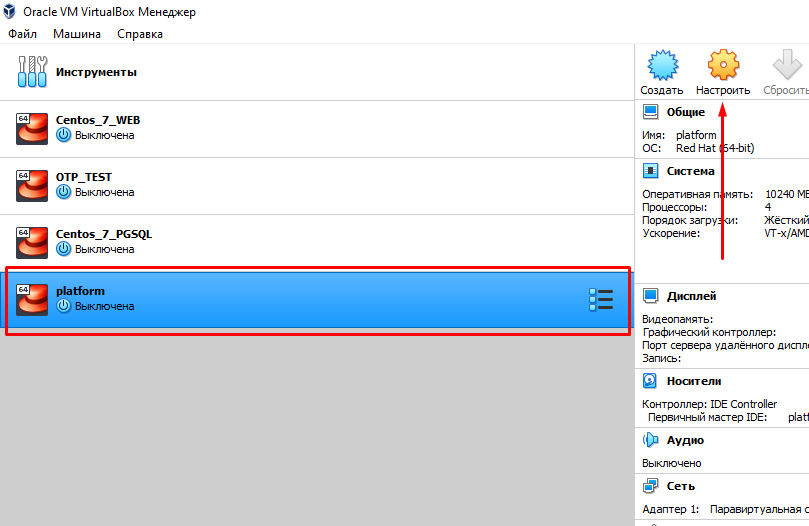
В появившемся диалоговом окне откройте раздел "Сеть", установите тип подключения "Сетевой мост" и нажмите "ОК":
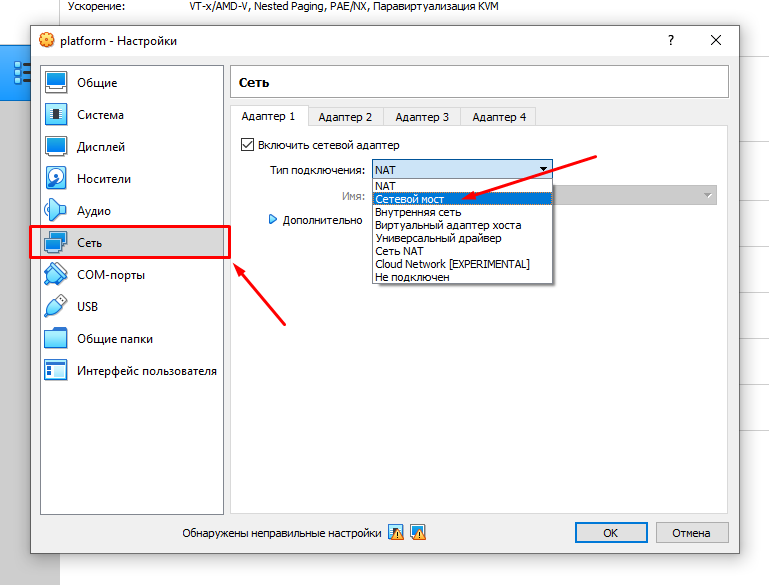
Теперь запустите виртуальную машину. Для этого нажимаем кнопку "Запустить" в основном окне программы:
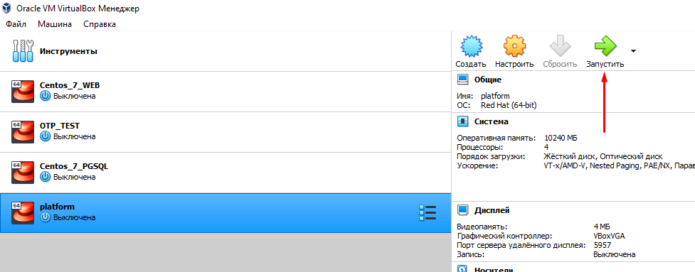
После выполнения загрузки машины зайдите под учётной записью суперпользователя "root" с паролем "password".
Подсказка по необходимым портам сервисов и учётной записи будет выведена на экран после загрузки системы.
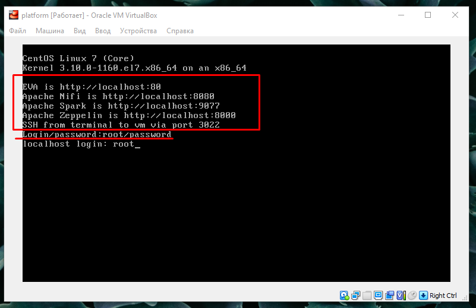
Настройка IP-адреса машины для работы с сервисами
При наличии DHCP-сервера
Если Ваша сеть предусматривает наличие DHCP-сервера, то производить каких- либо настроек сети не нужно – IP-адрес будет назначен автоматически.
Посмотреть адрес можно командой ip a.
Находим интерфейс с именем eth0. В строке inet будет указан IP-адрес виртуальной машины, полученный от Вашего DHCP-сервера:
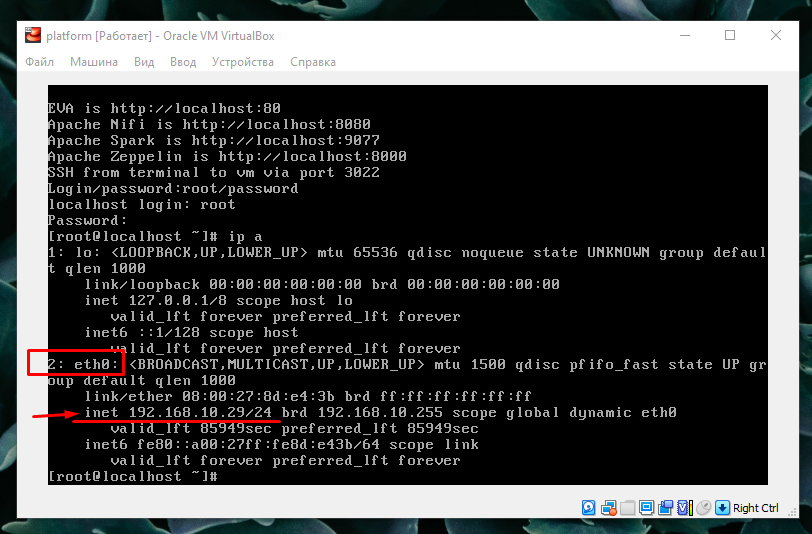
Проверить доступность машины можно стандартной утилитой ping с другого компьютера, находящегося в том же сегменте сети, что и опрашиваемый хост:
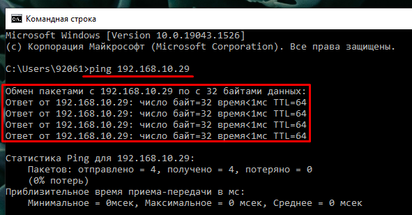
При отсутствии DHCP-сервера
Если Ваша сеть не предусматривает автоматическую выдачу IP-адресов в виду отсутствия DHCP-сервера, то в этом случае необходимо назначить IP-адрес виртуальной машине вручную.
Для этого требуется отредактировать файл ifcfg-eth0, находящийся в папке /etc/sysconfig/network-scripts, и файл network, размещённый в папке /etc/sysconfig.
При редактировании файла конфигурации можно воспользоваться файловым менеджером Midnight Commander, он уже установлен и готов к использованию. Для запуска Midnight Commander достаточно набрать команду mc. После чего найти указанный конфигурационный файл, используя кнопки навигации и "Еnter". Файл ifcfg-eth0 необходимо привести к следующему виду:
-
Изменить значение настройки BOOTPROTO на "static".
-
Изменить значение настройки IPADDR на IP-адрес виртуальной машины в Вашей сети.
-
Изменить значение настройки GATEWAY на шлюза из Вашей сети.
Пример конфигурации, где 192.168.10.29 – IP-адрес виртуальной машины, а 192.168.10.1 – шлюз сети:
IPADDR=192.168.10.29
NETMASK=255.255.255.0
GATEWAY=192.168.10.1
DEFROUTE="yes"
PEERROUTES="yes"
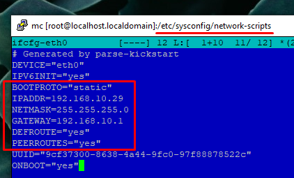
Сохраните выполненные изменения с помощью клавиши "F2". Для выхода из режима редактирования дважды нажмите клавишу "Escape".
Далее необходимо отредактировать файл network, находящийся в папке /etc/sysconfig, добавив следующие строки:
NETWORKING=yes
HOSTNAME=platform
GATEWAY=192.168.10.1
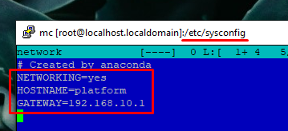
Внесённые изменения сохраняем с помощью клавиши "F2" и выходим из режима редактирования, дважды нажав клавишу "Escape".
Обратите внимание!
Для того, чтобы изменения вступили в силу, необходимо ввести команду systemctl restart network. Для проверки работы сети Вашей виртуальной машины воспользуйтесь утилитой ping, указав адрес внешнего (при наличии доступа в интернет) или внутреннего хоста:
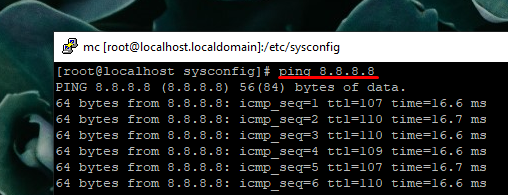
Запуск WDC.Платформы и доступ к сервисам
Для запуска всех необходимых сервисов достаточно запустить скрипт start.sh, находящийся в папке /opt/otp.
Запуск можно осуществить с помощью менеджера Midnight Commander. Сначала запустите менеджер командой mc. Далее с помощью кнопок навигации зайдите в папку /opt/otp и запустите скрипт start.sh на выполнение клавишей "Enter" или наберите имя скрипта в консоли с указанием полного пути до него: opt/otp/start.sh.
Важно!
Сервис "Apache NiFi" запускается по истечении некоторого времени. Оно зависит от конфигурации сервера, на котором запущена виртуальная машина.
Запуск сервисов заканчивается строкой: Zeppelin start …[ OK ].
Вход в основные сервисы осуществляется с помощью браузерам на любом компьютере, находящемся в том же сегменте сети, что и виртуальная машина с WDC.Платформой.
Вход в EVA
Формат адреса для входа в EVA:
http://\<IP адрес виртуальной машины>
Пример.
Вход в EVA выполняется по адресу http://192.168.10.29.
Данные для входа (по умолчанию): имя пользователя – admin, пароль – 12345678.
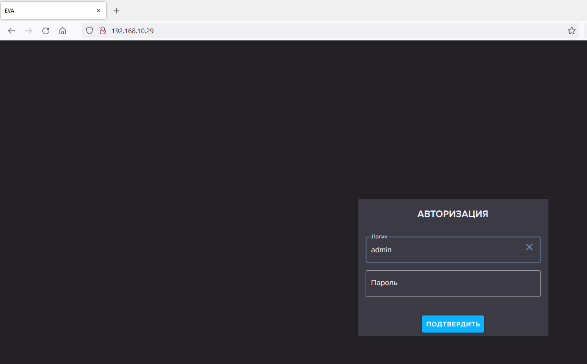
Вход в Apache NiFi
Формат адреса входа в Apache NiFi:
http://\<IP адрес виртуальной машины:8080>
Пример.
Вход в Apache NiFi выполняется по адресу http://192.168.10.29:8080:
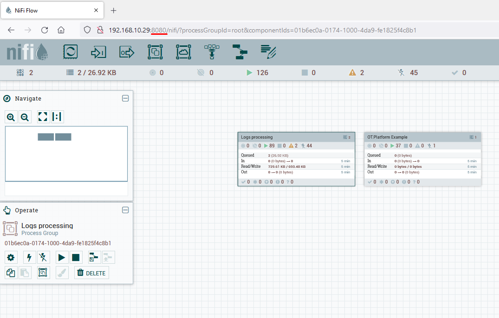
Вход в Apache Spark
Формат адреса для входа в Apache Spark:
http://\<IP адрес виртуальной машины>:9077
Пример.
Вход в Apache Spark выполняется по адресу http://192.168.10.29:9077:
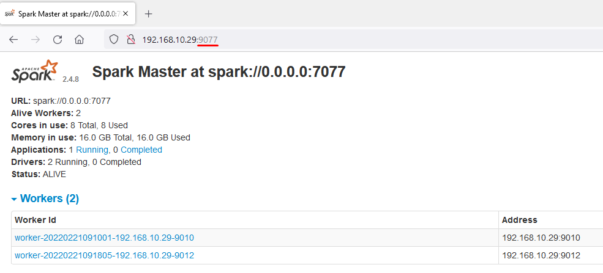
Подключение по SSH
Для удалённого подключения к виртуальной машине, можно использовать любой доступный клиент, поддерживающий SSH-подключения.
Самым распространённым клиентом в этом случае является программа PuTTY. Скачать её можно с официального сайта из раздела "Download": https://www.chiark.greenend.org.uk/\~sgtatham/putty/latest.html
После запуска программы в поле "Host Name (or IP address)" укажите IP-адрес виртуальной машины и нажмите кнопку "Open". Поле "Port" оставьте без изменений.
Например, в поле "Host Name (or IP address)" вводим 192.168.10.29:
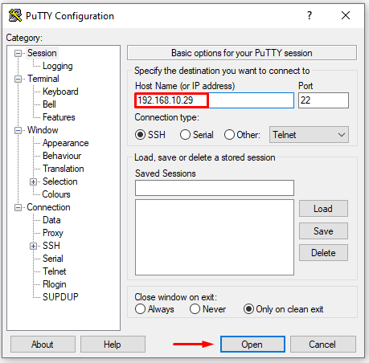
В следующем окне о принятии сертификата нажмите кнопку "Accept". При успешном подключении на экран будет выведено предложение ввести учётные данные для доступа к виртуальной машине:
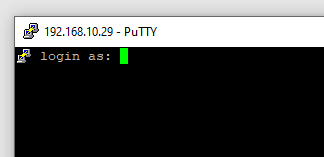